Next: Efficiency measure -
Up: Schedule quality metrics (SQM)
Previous: Project completion
Contents
.
I need a way to compare the results of various schedules i.e. the result of scheduling over say a night using a given algorithm or set of parameters or despatching rule(s)/policy. What I am after is a way of measuring the cumulative reward for the night. This is not the same as a look-ahead situation where I am trying to decide what to do - this is a posterior measurment of how good a particular schedule has been.
We shall define as the 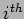 schedule. It contains a sequence
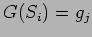 of groups, which are executed at times 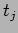.
There are 2 sorts of utility/reward being considered.
- Enterprise utility.
The first represents the utility to the telescope, Ideally it wants to do (scientifically) valuable work and as much of it as possible. It does not want to sit about doing nothing just so it can wait for a high value observation with a small window of opportunity (graph showing a schedule snippet with 2 low value but long groups and little idle time and 2 high value (scientific priority) but short groups with a heap of idle time) if we consider the figure the low value groups give a low sum score 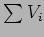 for the night if we just add their individual utilities whereas the high value groups give a high sum score. On the other hand if we do an integral (int V(t)) we get a better score for the low value groups.
We may want to factor in idle time as a contribution to cumulative reward i.e. as a penalty/cost term. This can arise for several reasons:-
There may be an idle gap between groups due to the specific enablement windows, during the execution of a group we can distinguish useful and wasted time - useful time is basically exposing (and to some extend readout which we cannot avoid), wasted time includes slewing, selection and configuraton of instruments, acquisition by autoguider, settling time, and the scheduling time itself.
Factors we might include in 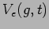 include:-
- some measure of the scientific priority assigned to the group's proposal.
- a contribution from condition matching - we dont want to waste quality time doing groups which can be executed in poorer conditions.
- User utility.
The second approach is via a set of user-preference metrics. In the ideal schedule all the user's doable observations would be done at their optimum times. Of course we cant always work these out - we can work out when the target will be best placed e.g. at its highest elevation in the current window (bear in mind the window may extend over several nights) but we cannot say what the conditions will be like at that time - i.e. the scope may be out of action due to weather or the seeing could be horrendous. The user's preferences metric could include factors like - how close to centre of time window, how good the airmass, how well conditions are/will be matched. Each group could have a set of user-specified weights for these as they would have their own preferences as to which are more important and the relative importance of particular attribute values. One user might prefer his observations to be done at low airmass rather than worrying too much about timeliness, another might want his timing adhered to rigidly and not care so much about the airmass - the group's observing constraints define limits for these attributes.
Factors we might include in 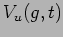 include:-
- airmass preference
- sky brightness
- seeing matching
- window position
- data profile tracking
We can also work out the utility 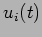 for a group over the night, this will have some maximum value 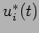 in any given night - this is the optimum time to do the group so we could work out
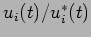 so the utilities are normalized - do we need to do that?
Maybe we want something like.
where 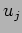 is the amount of useless/unproductive time in the group execution, 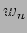 is the weighting for user-pref satisfaction,
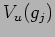 is the value the user assigns to the performing of his observation at the selected time, 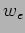 is the weighting for enterprise value,
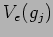 is the value of scientific priority assigned to the chosen observations, 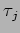 is the useful time part of the group's execution - (we are integrating, or are we ?)
This metric adds in the contribution from enterprise and user-preference matching but since all users are free to specify their own weightings does this cause any problems with comparison? e.g. If user-A assigns preferences so his observations are always good i.e. he has no preference and user-B chooses his preferences so his observations are best at t_B, user-A will get a better score contribution most of the time - this may not matter - we are not using this to select A over B just to measure the selection score over the night?
Next: Efficiency measure -
Up: Schedule quality metrics (SQM)
Previous: Project completion
Contents
Steve Fraser
2008-01-31